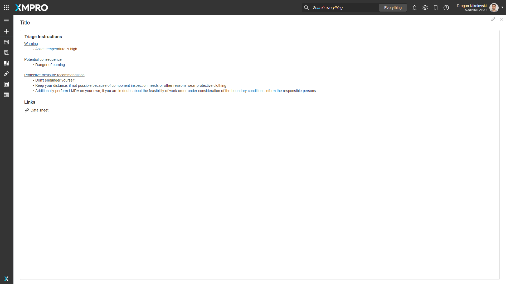

Alert Triage
v4.4.7
The Alert Triage is an area that provides useful information on suggested actions to resolve the Alert, and links to relevant resources.
It is only available if the Recommendation Rule has Triage Instructions enabled.
 Fig 1: Triage data for an Alert
Alert Triage Properties
Appearance
Common Properties
The visibility property is common to most Blocks;
See the Common Properties article for more details on common appearance properties.
Title
Optional text that shows at the top of the block and defaults to "Triage Instructions".
Behavior
Alert ID
Supply an Alert Identifier and the the Triage Instructions associated with its Recommendation Rule are displayed when the Page is opened.
Last modified: May 31, 2025